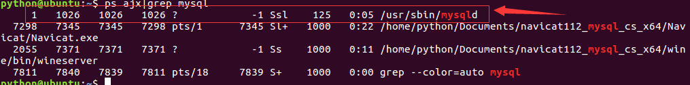
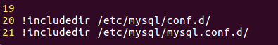
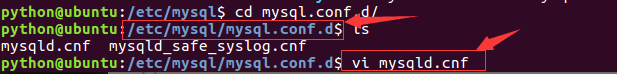
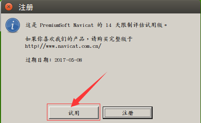
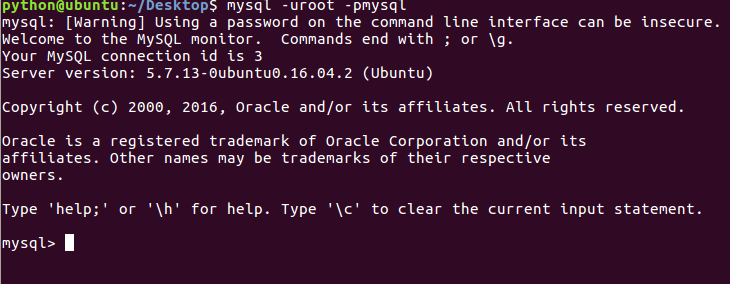

服务器端安装
- 安装服务器端：在终端中输入如下命令，回车后，然后按照提示输入
sudo apt-get install mysql-server
- 当前使用的ubuntu镜像中已经安装好了mysql服务器端，无需再安装，并且设置成了开机自启动
- 服务器用于接收客户端的请求、执行sql语句、管理数据库
- 服务器端一般以服务方式管理，名称为mysql
- 启动服务
sudo service mysql start
- 查看进程中是否存在mysql服务
ps ajx|grep mysql

- 停止服务
sudo service mysql stop
- 重启服务
sudo service mysql restart
配置
- 配置文件目录为/etc/mysql/mysql.cnf

- 进入conf.d目录，打开mysql.cnf，发现并没有配置
- 进入mysql.conf.d目录，打开mysql.cnf，可以看到配置项

- 主要配置项如下
bind-address表示服务器绑定的ip，默认为127.0.0.1
port表示端口，默认为3306
datadir表示数据库目录，默认为/var/lib/mysql
general_log_file表示普通日志，默认为/var/log/mysql/mysql.log
log_error表示错误日志，默认为/var/log/mysql/error.log
客户端
- 客户端为开发人员与dba使用，通过socket方式与服务端通信，常用的有navicat、命令行mysql
图形化界面客户端navicat
- 可以到Navicat官网下载
- 将压缩文件拷贝到ubuntu虚拟机中，放到桌面上，解压
tar zxvf navicat112_mysql_cs_x64.tar.gz
- 进入解压的目录，运行如下命令
./start_navicat
- 启动如下图，详细功能见下节
- 点击两次“取消”按钮后如下图

- 点击“试用”按钮后如下图

问题一：中文乱码
解决：打开start_navicat文件
将export LANG="en_US.UTF-8"改为export LANG="zh_CN.UTF-8"
- 问题二：试用期
- 解决：删除用户目录下的.navicat64目录
cd ~
rm -r .navicat64
命令行客户端
- 在终端运行如下命令，按提示填写信息
sudo apt-get install mysql-client
- 当前使用的ubuntu镜像中已经安装好了mysql客户端，无需再安装
- 详细连接的命令可以查看帮助文档
mysql --help
- 最基本的连接命令如下，输入后回车
mysql -u root -pmysql
- 连接成功后提示如下图

- 按ctrl+d或输入如下命令退出
quit 或者 exit